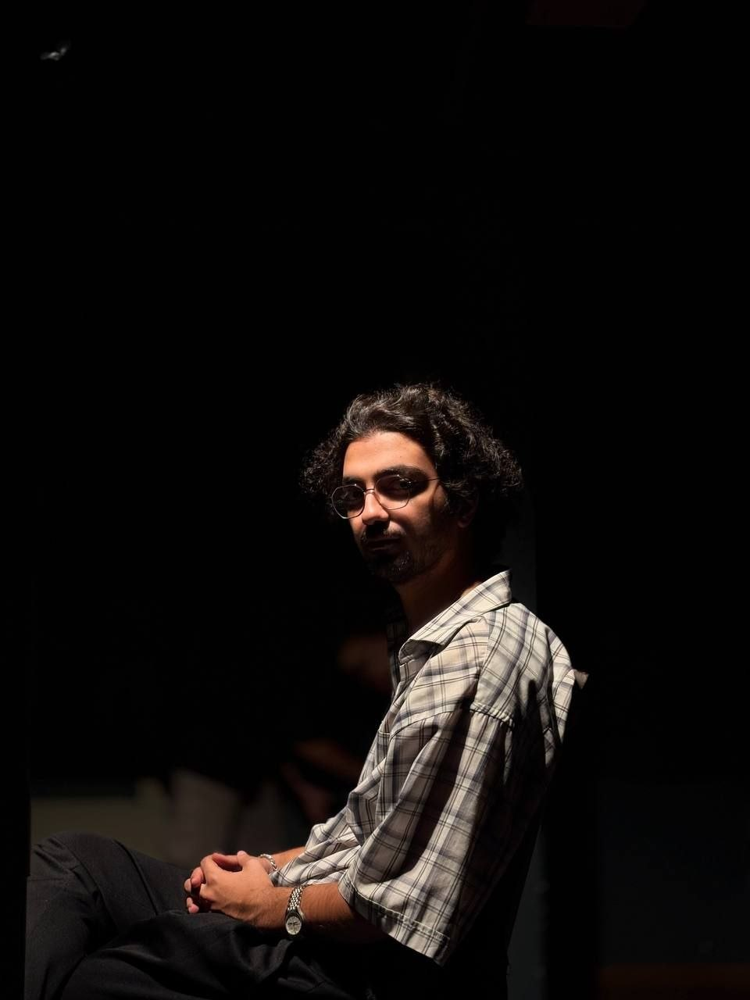

Contemporary Composer
Contemporary composition, electroacoustic music, orchestral writing and artistic research.

Parsa Alikhani (b. 2006) is an Iranian composer and musician currently studying composition at the University in Tehran. His artistic practice focuses on contemporary and electroacoustic music, extended instrumental techniques, spectral relationships, and the transformation of unconventional sound materials into structured musical forms. He has presented live-electronic and instrumental performances, piano performances, and lectures and conferences on music research in Iran. Alikhani has participated in workshops including Ligeti in the Work, From Nono to Lachenmann, electronic music workshops with Stéphane de Gérando Joachim Heintz, Jean Voguet, and Michael Edwards, and Understanding Iranian Music. Selected works include Experiment Lab: Harmonic Debris No. 1 (2026), String Quartet No. 1 (2026), and Schrödinger’s Cat (2026). Contemporary composer working with a hybrid language between spectral and serialist techniques. Focus on structural clarity, emotional narrative, and extended harmonic systems including chromatic and serial approaches. Interested in integrating microtonality and nonfunctional harmonic fields into large-scale forms.
Piano and Live electronic
Electroacoustic Music
Chamber Music
Research on aesthetics, phenomenology, and the philosophy of contemporary music.
Studies in sound transformation, live electronics, and experimental composition.
How Takemitsu used his Thoughts as a matter of his music
How Stravinsky's ideas used to made diffrences in modernism of music pattern
Performance Dance of the Bow Tehran
Toru Takemitsu thoughts Workshop Tehran
GET IN TOUCH
For commissions, performances, collaborations and other inquiries, feel free to get in touch.
parsa.asus84@gmail.com ↗